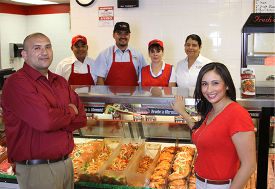
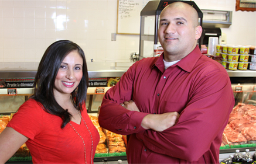

About
Main Market is a family-owned, local beer, wine, liqour, grocery and meat market (carniceria). Serving Whittier since 1999. Reminiscent of the classic Mexican-style butcher shop, we offer only the finest and freshest premium quality meat. Meat is cut to your liking and seasoned just right. Freshness, quality, and the best customer service in town is why our customers keep coming back. Come on in and we’ll make you a believer too!  With fresh Mexican groccery Main Market also serves beer, wine, liqour. We also have Mexican-style butcher shop, Main Market is famous for its Mexican inspired seasoned carne asada, seasonedchicken, daily made salsas and guacamole, carnitas, chicharones, birria, menudo, and much more. Friendly service, cleanliness, and the freshest, highest quality meats from such places as the award-winning, California-based Harris Ranch, is what sets Carniceria La Carreta apart from the competition. The Chhura family makes sure that each customer is treated as if they were part of the family. They take great pride in having their customers come back time and time again for the freshest, highest quality meats, and best customer service in town!
Our History
On April 22, 1999, Main Market was born. In 2013, Main Market went through fire incident which caused the store to be closed for 1.5 years. In 2015, Main Market fully recovered from its loss and had complete remodel. With the same owners Main Market's first priority has always been freshness, quality, and great customer service. These high standards of quality and service and a strong work ethic have been the keys to the store's success and are the reason for the strong loyalty between Main Market and its customers.
Our Future
Main Market has always been a family-owned and operated business. And now that the store is reopened the family working to hard to build back there business.  With new remodled store, the owners pledge to never lose visio of the store which is high standards, freshness, top quality products, and great customer service that have created such a loyal customer base before the fire loss. And as always, they welcome everyone new to come in to experience the newly remodeled store and become part of the "Main Market Family".